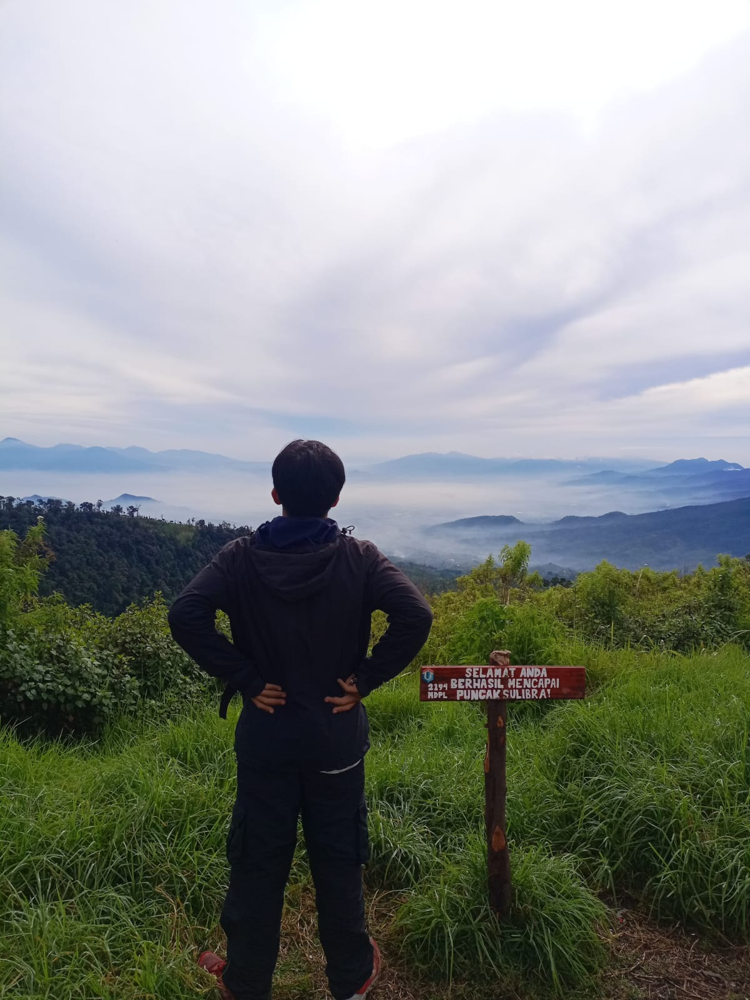

Bandung
Gunung Artapela
Padang rumput luas yang menenangkan di perbatasan Bandung-Garut.
Arsip 13 puncak yang telah berhasil dijejaki oleh Pahril Lesmana.
Lihat Daftar GunungPadang rumput luas yang menenangkan di perbatasan Bandung-Garut.
Menjelajahi jalur pendakian yang masih asri dan alami di wilayah Garut.
Atap Jawa Barat yang menantang kekuatan fisik dan mental pendaki.
Jalur vertikal legendaris menuju puncak tertinggi di wilayah Garut.
Keindahan abadi di Alun-Alun Suryakencana dengan hamparan Edelweiss.
Puncak dengan pemandangan lanskap Garut yang memanjakan mata.
Bukit cantik dengan hamparan rumput sabana yang sangat luas.
Mencari ketenangan batin di syahdu-nya Lembah Mandalawangi.
Gunung ramah pendaki dengan pesona kawah aktif dan hutan mati.
Melihat pesona Talaga Bodas yang memukau dari titik ketinggian.
Atap Jawa Tengah yang megah dengan medan pasir yang menantang.
Eksplorasi keindahan batuan purba di puncak tertinggi Sumedang.
Miniatur Semeru dengan tantangan jalur pasir ikonik di Garut.